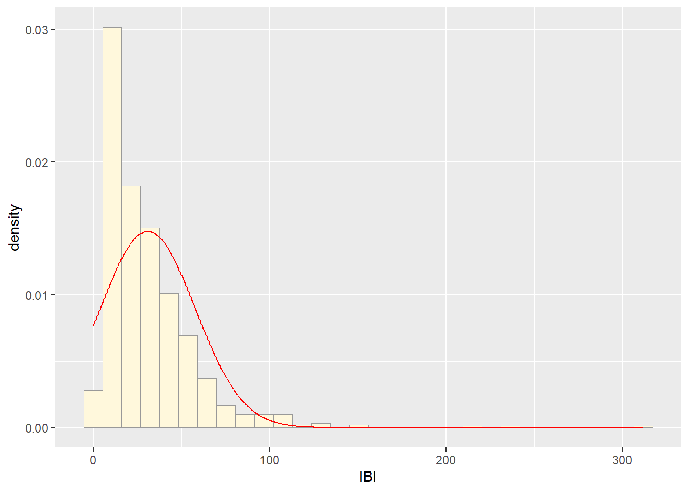

library(ggplot2)
library(MASS)## Warning: package 'MASS' was built under R version 4.4.2##
## Adjuntando el paquete: 'MASS'## The following object is masked from 'package:dplyr':
##
## select## The following object is masked from 'package:patchwork':
##
## area# my dataset
z <- read.table("ibi.csv",header=TRUE,sep=",")
str(z)## 'data.frame': 826 obs. of 4 variables:
## $ IBI : num 4 78.3 20 60.8 57 ...
## $ Cump : chr "NN" "NN" "NN" "NN" ...
## $ NB : int 7 7 7 7 7 7 7 7 7 7 ...
## $ distancia: chr "menos de 30m" "menos de 30m" "menos de 30m" "menos de 30m" ...summary(z)## IBI Cump NB distancia
## Min. : 2.244 Length:826 Min. :0.000 Length:826
## 1st Qu.: 12.993 Class :character 1st Qu.:1.000 Class :character
## Median : 23.312 Mode :character Median :3.000 Mode :character
## Mean : 30.892 Mean :2.933
## 3rd Qu.: 40.853 3rd Qu.:4.000
## Max. :311.924 Max. :9.000## Plot histogram of data
p1 <- ggplot(data=z, aes(x=IBI, y=..density..)) +
geom_histogram(color="grey60",fill="cornsilk",linewidth=0.2)
print(p1)## Warning: The dot-dot notation (`..density..`) was
## deprecated in ggplot2 3.4.0.
## ℹ Please use `after_stat(density)` instead.
## This warning is displayed once every 8 hours.
## Call `lifecycle::last_lifecycle_warnings()` to
## see where this warning was generated.## `stat_bin()` using `bins = 30`. Pick better
## value with `binwidth`.##Get maximum likelihood parameters for normal
normPars <- fitdistr(z$IBI,"normal")
print(normPars)## mean sd
## 30.8915000 26.9542898
## ( 0.9378597) ( 0.6631669)str(normPars)## List of 5
## $ estimate: Named num [1:2] 30.9 27
## ..- attr(*, "names")= chr [1:2] "mean" "sd"
## $ sd : Named num [1:2] 0.938 0.663
## ..- attr(*, "names")= chr [1:2] "mean" "sd"
## $ vcov : num [1:2, 1:2] 0.88 0 0 0.44
## ..- attr(*, "dimnames")=List of 2
## .. ..$ : chr [1:2] "mean" "sd"
## .. ..$ : chr [1:2] "mean" "sd"
## $ n : int 826
## $ loglik : num -3893
## - attr(*, "class")= chr "fitdistr"normPars$estimate["mean"] # note structure of getting a named attribute## mean
## 30.8915##Plot normal probability density
meanML <- normPars$estimate["mean"]
sdML <- normPars$estimate["sd"]
xval <- seq(0,max(z$IBI),len=length(z$IBI))
stat <- stat_function(aes(x = xval, y = ..y..), fun = dnorm, colour="red", n = length(z$IBI), args = list(mean = meanML, sd = sdML))
p1 + stat## `stat_bin()` using `bins = 30`. Pick better
## value with `binwidth`.
##Plot exponential probability density
expoPars <- fitdistr(z$IBI,"exponential")
rateML <- expoPars$estimate["rate"]
stat2 <- stat_function(aes(x = xval, y = ..y..), fun = dexp, colour="blue", n = length(z$IBI), args = list(rate=rateML))
p1 + stat + stat2## `stat_bin()` using `bins = 30`. Pick better
## value with `binwidth`.##Plot uniform probability density
stat3 <- stat_function(aes(x = xval, y = ..y..), fun = dunif, colour="darkgreen", n = length(z$IBI), args = list(min=min(z$IBI), max=max(z$IBI)))
p1 + stat + stat2 + stat3## `stat_bin()` using `bins = 30`. Pick better
## value with `binwidth`.###Plot gamma probability density
gammaPars <- fitdistr(z$IBI,"gamma")
shapeML <- gammaPars$estimate["shape"]
rateML <- gammaPars$estimate["rate"]
stat4 <- stat_function(aes(x = xval, y = ..y..), fun = dgamma, colour="brown", n = length(z$IBI), args = list(shape=shapeML, rate=rateML))
p1 + stat + stat2 + stat3 + stat4## `stat_bin()` using `bins = 30`. Pick better
## value with `binwidth`.##Plot beta probability density
pSpecial <- ggplot(data=z, aes(x=IBI/(max(IBI + 0.1)), y=..density..)) +
geom_histogram(color="grey60",fill="cornsilk",size=0.2) +
xlim(c(0,1)) +
geom_density(size=0.75,linetype="dotted")## Warning: Using `size` aesthetic for lines was
## deprecated in ggplot2 3.4.0.
## ℹ Please use `linewidth` instead.
## This warning is displayed once every 8 hours.
## Call `lifecycle::last_lifecycle_warnings()` to
## see where this warning was generated.betaPars <- fitdistr(x=z$IBI/max(z$IBI + 0.1),start=list(shape1=1,shape2=2),"beta")## Warning in densfun(x, parm[1], parm[2], ...): Se han producido NaNs## Warning in densfun(x, parm[1], parm[2], ...): Se han producido NaNs
## Warning in densfun(x, parm[1], parm[2], ...): Se han producido NaNs
## Warning in densfun(x, parm[1], parm[2], ...): Se han producido NaNs
## Warning in densfun(x, parm[1], parm[2], ...): Se han producido NaNsshape1ML <- betaPars$estimate["shape1"]
shape2ML <- betaPars$estimate["shape2"]
statSpecial <- stat_function(aes(x = xval, y = ..y..), fun = dbeta, colour="orchid", n = length(z$IBI), args = list(shape1=shape1ML,shape2=shape2ML))
pSpecial + statSpecial## `stat_bin()` using `bins = 30`. Pick better
## value with `binwidth`.## Warning: Removed 2 rows containing missing values or
## values outside the scale range (`geom_bar()`).# Simulating random numbers using the rgamma function
sim <- rgamma(n=826,shape =shapeML,rate = rateML)
simu_data <- data.frame(1:826,sim)
names(simu_data) <- list("ID","IBI")
str(simu_data)## 'data.frame': 826 obs. of 2 variables:
## $ ID : int 1 2 3 4 5 6 7 8 9 10 ...
## $ IBI: num 12.8 74.1 14.9 41.6 66.1 ...summary(simu_data$IBI)## Min. 1st Qu. Median Mean 3rd Qu. Max.
## 0.4932 14.0480 25.7029 31.2958 42.1221 177.1351#plot an histogram of the data
p <- ggplot(data=simu_data, aes(x=IBI, y=..density..)) +
geom_histogram(color="grey60",fill="cornsilk",size=0.2)
print(p)## `stat_bin()` using `bins = 30`. Pick better
## value with `binwidth`.# calculating the maximum likelihood parameters
gammaP <- fitdistr(simu_data$IBI,"gamma")
shapeMLsim <- gammaP$estimate["shape"]
rateMLsim <- gammaP$estimate["rate"]
stat_simgamma <- stat_function(aes(x = xval, y = ..y..), fun = dgamma, colour="brown", n = length(simu_data$IBI), args = list(shape=shapeMLsim, rate=rateMLsim))
#adding the probability density curve
p+stat_simgamma## `stat_bin()` using `bins = 30`. Pick better
## value with `binwidth`.p1+stat4## `stat_bin()` using `bins = 30`. Pick better
## value with `binwidth`.